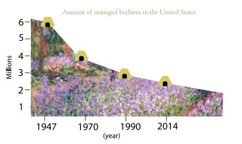

How You Can Help
1)Support the "Saving America's Pollinators Act of 2021"
You can go here (https://www.govtrack. us/congress/bills/117/hr4079/comment) to learn how to write to your congress members about supporting the Saving America's Pollinators Act of 2021.
Plant a bee friendly garden
One way to help bees is by planting a bee garden! Some flowers that are helpful to bees are: alyseum, cleome, zinnias, sunflowers, salvia, calendula, and verbena.
Growing herbs is also helpful for bees. Some great ones include: sage, theyme, borage, lavender, chives, dill, basil, oregano, roesmary, and mint.
(You can find more information on bee frinedly plants here (https://www.almanac.com/best-flowers-bees)
3)Become a beekeeper
The number of managed honey bee colonies in the US has steadily decreased over the last 60 years. Becoming a bee keeper is one way you can help grow the population of honey bees.
4)Spread the word
A survey we conducted shows that there is a correlation between apathey towards the bee crisis and lack of knowledge about the bee crisis. Spreading the word and education other people about the decline of the bee population, its causes, and how it will affect our future, ia a gerat way to get more peopel involved in making a change.